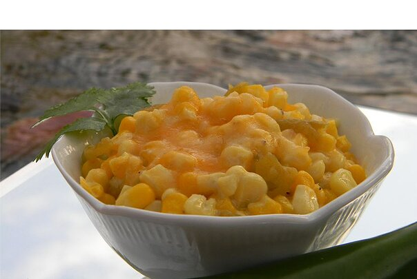

Hot Corn

A dear friend gave me this spicy recipe. It has since become a must have for the holidays and all special occasions!! my husband and 3 brothers can finish it all in one sitting!! Everyone that tries it wants the recipe!
Ingredients
- 1 cup butter
- 2 (8 ounce) packages cream cheese
- 1/2 cup milk
- 4 (15 ounce) cans whole kernel corn, drained
- 1 (12 ounce) jar jalapeno peppers, drained and diced
- 2 cups shredded Cheddar Cheese
Steps
- Preheat oven to 375 degrees F (190 degrees C).
- In a medium saucepan over medium heat combine butter, cream cheese and milk; stir until smooth.
- In a 9x13 inch baking dish combine corn and jalapenos. Pour milk mixture over corn and sprinkle with cheddar cheese.
- Bake in preheated oven for 35 minutes.